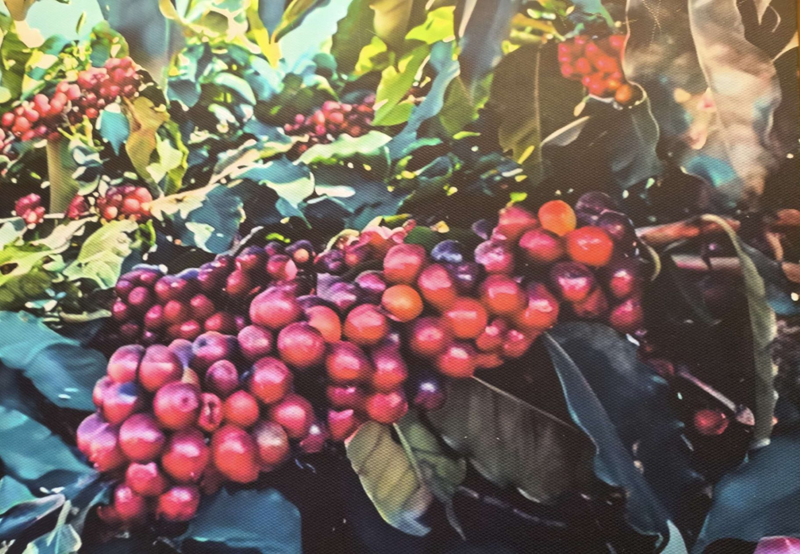
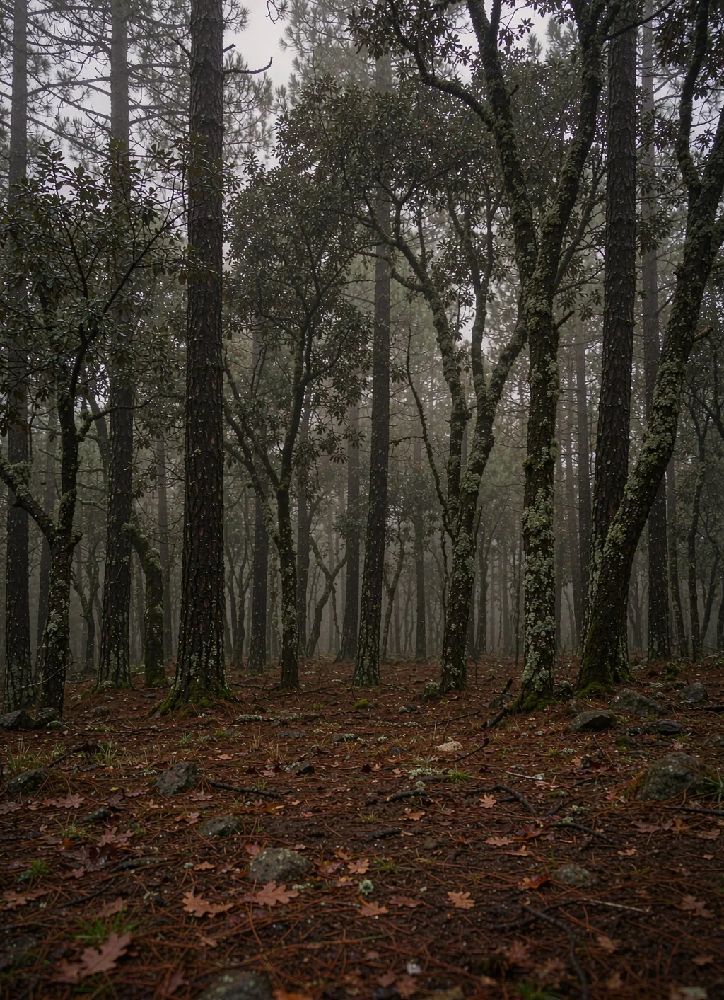
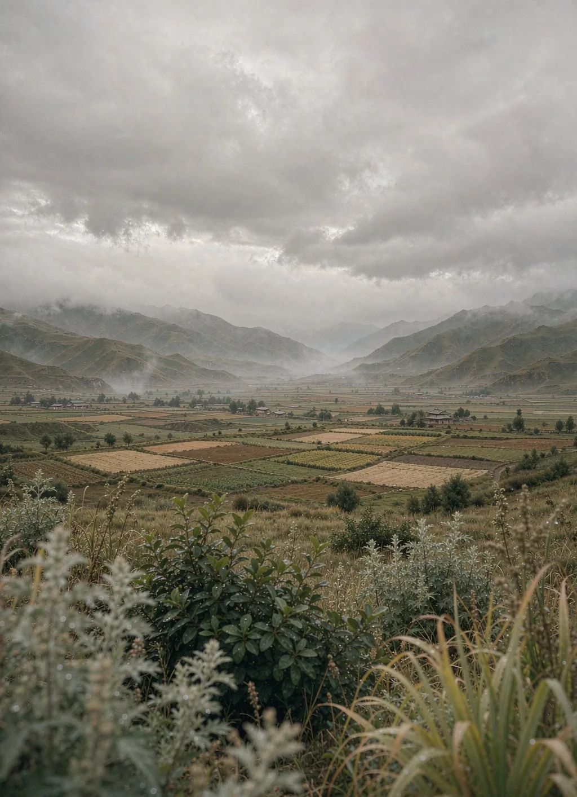

PHILOSOPHY · 品牌理念
山不言，我们把风土
原原本本交到你手上
以这片山为原点：北纬 25° 火山灰庄园，咖啡杯测 89 分方入罐；哀牢山三百年古茶树，不施肥不修剪，日光晒青养出兰香蜜甜；香格里拉松栎林下，黑松露当日出土、低温直达；滇中高原香草蒸馏入瓶，成「云南气味地图」。好山好水出精品——四座山，四套标准，批次可查。
THE FOUR · 精选四品
四座山，四种收成




怒江 · 云蔓庄园NUJIANG ESTATE
哀牢山 · 哈尼古茶园AILAO MOUNTAINS
香格里拉 · 松栎混交林SHANGRI-LA WOODS
滇中高原 · 植物香氛CENTRAL PLATEAU
从农户的背篓，到你的杯盏，中间只有一次诚实的手。
From the forager's basket to your cup — one honest hand in between.